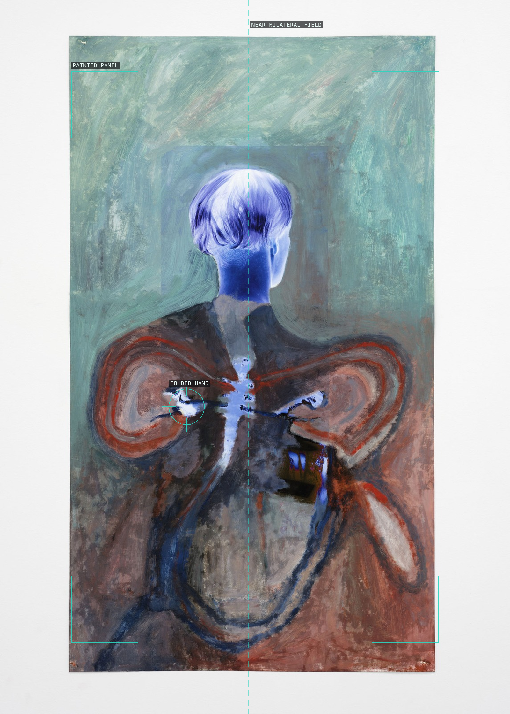
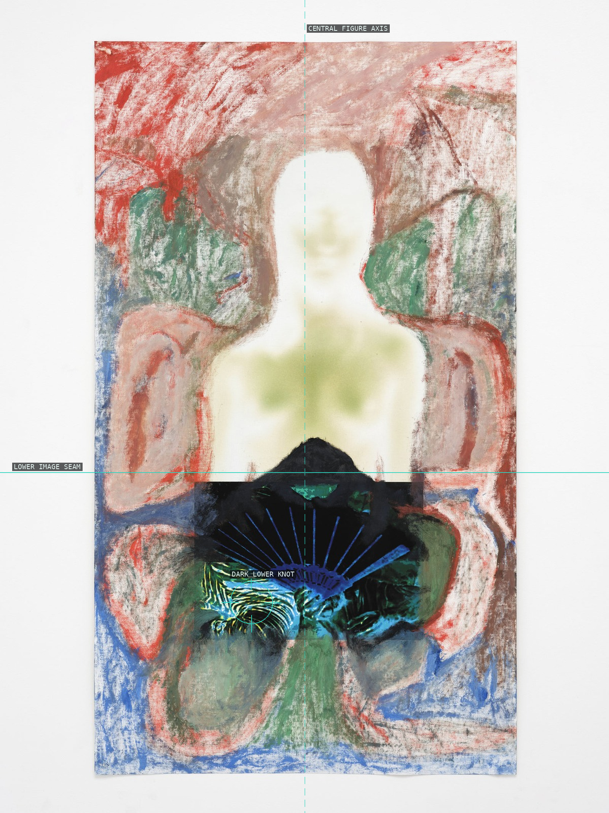
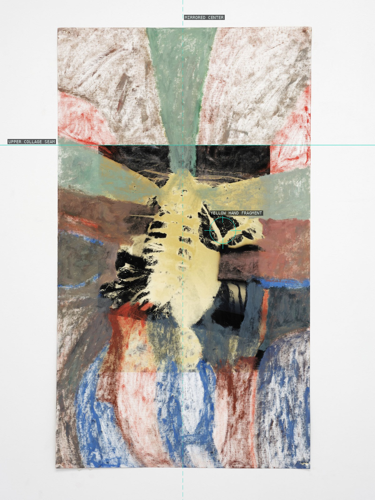
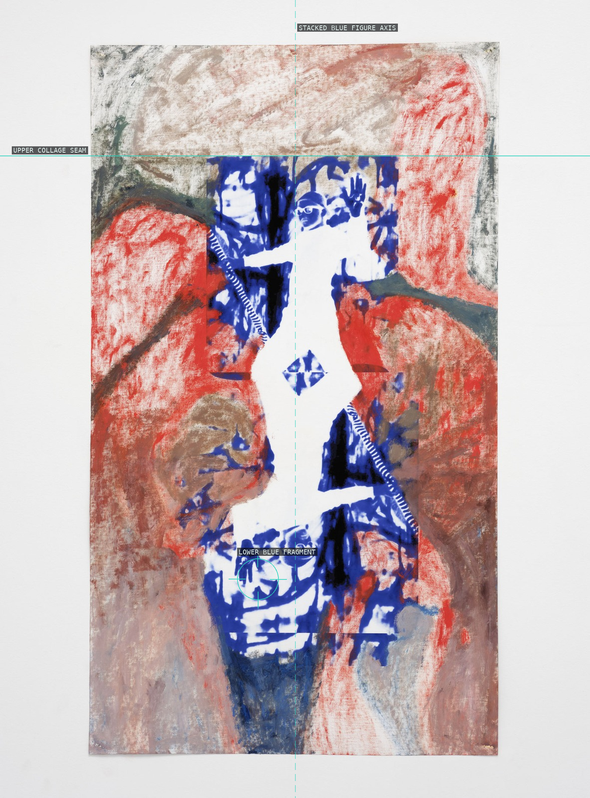
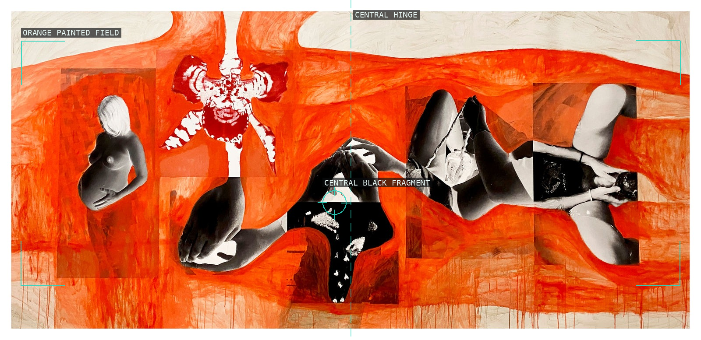
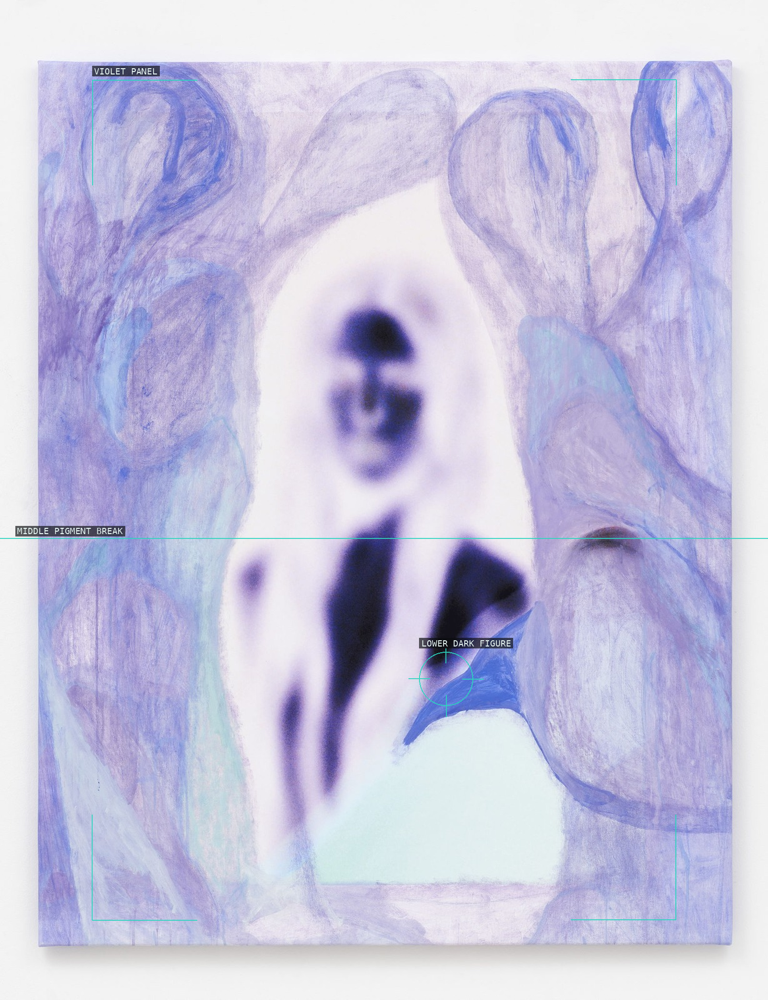
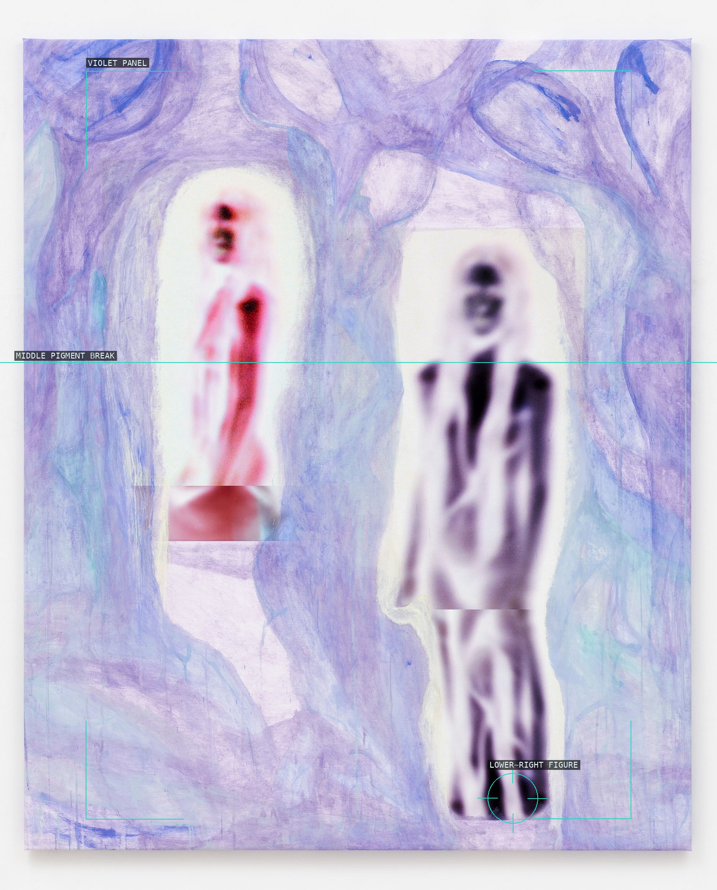
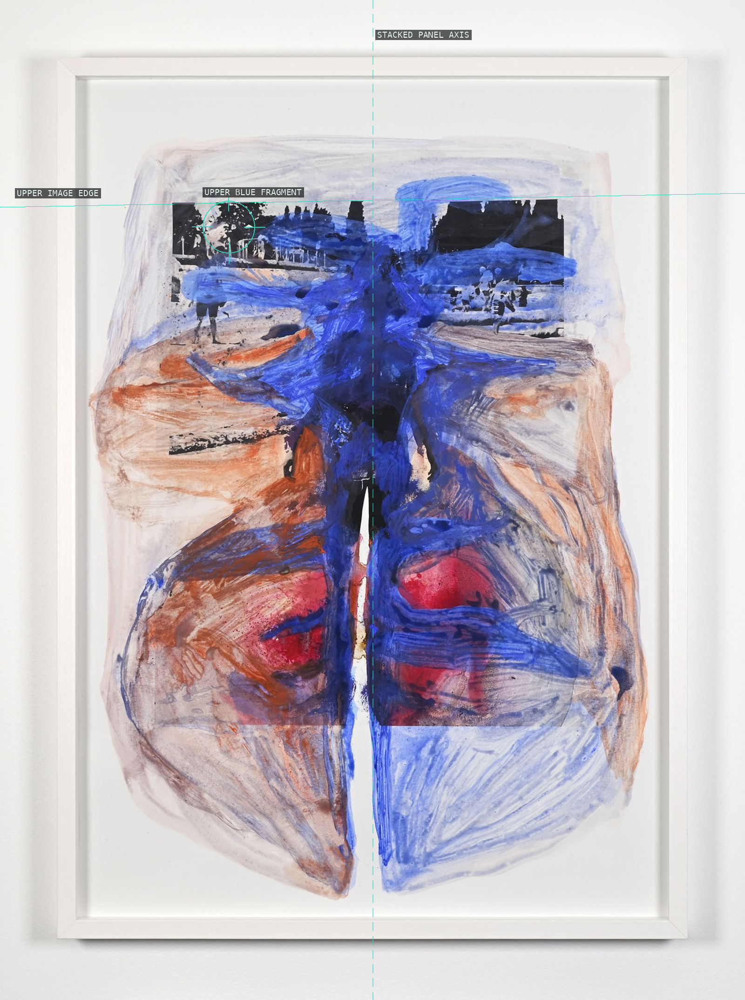
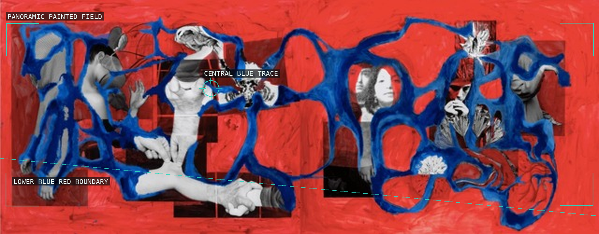
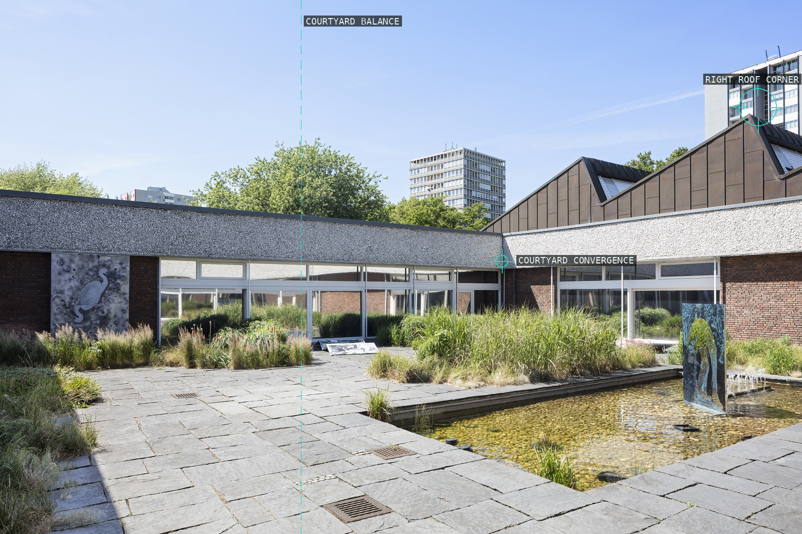

/* ozlem-altin - proofs */
10 plates. Deterministic overlays rendered by the composition-analysis skill.

01-echo
A nearly bilateral field leaves a small dark hand-shaped knot as its interruption.

02-fountain
A pale head and dark lower cluster create a vertical relay through the panel.

03-mirror
An upper seam and a central cut turn repetition into a hinge.

04-mosaic
A stacked blue figure is held between a high seam and a lower blue fragment.

05-untitled-alignment-blessing
A wide orange field joins separated dark fragments into a lateral sequence.

06-our-light-is-a-voice-i
A violet field is interrupted by a lower dark figure and a middle break.

07-our-light-is-a-voice-ii
Two pale figures divide the panel before the darker lower-right figure.

08-alignment-expansion-ii
An upper blue fragment and central stack keep the tall panel visibly open.

09-pulse-and-grief-encapsulated-reactivated
A blue trace remains distinct inside a wide red painted field.

10-psyche-grow-deep-installation
Courtyard edges converge toward the distant gallery setting.